이잇후~ 드디어 미국에 왔다. 비행기가 착륙하기 30분 전부터 설렘 반 긴장
반의 마음을 안고 창밖으로 시애틀의 산과 바다, 평야를 내려다보았다.
미 북서부의 눈 덮인 겨울산과 바다가 침엽수림 사이로 마주 보고 있었고
위대한 자연의 선물에 인간은 미약하게나마 높게 솟은 마천루들로 보답하고
있었다.

(9.11 테러 이후 강화되었다는 미국의 입국심사. 그토록 기다리던
파란불이가끔 노란 불로 바뀌어 옆방으로 끌려가는 사람들을 볼 때마다
무언의긴장감이 마음을 짓눌렀다.)
착륙은 비행기와 기장님이 하나가 된 신의 경지, 마치 물아일체의 경이로운 착륙이었다. 필자(택)와 희원이는 비행기 바퀴가 언제 땅에 닿을 것인지 내기를 걸었지만 그 승부는 승자도 패자도 없이 감탄만 남았다(가능하다면 이 자리를 빌려 기장님께 경의를 표하고 싶다). 9시간 50분의 비행을 끝내고 마침내 미국에 발을 디딘 순간, 우리가 처음으로 마주한 것은 자유의 여신상도(물론 여긴 시애틀이니까ㅎㅎ) 그랜드캐니언도(역시 시애틀이니까^^) 트럼프 사진도 아닌 엄청난 인파였다. 정말로 줄의 끝이 보이지 않는 아비규환의 상황 속, 어제도 오늘도 내일도 그럴 것이라는 듯 아무렇지 않게 태평한 얼굴로 사람들 사이에서 줄을 통제하고 능숙하게 관광비자와 취업, 유학 비자를 분리해 내는 아메리칸들만 분주히 움직일 뿐이었다. 우리는 입국 신고서와 여권을 손에 꼭 쥔 채 인파에 2두(頭)를 보태는데 가담하기로 마음먹었다.
입국심사는 예상했던 것보다 수월했다. 나를 담당한 입국심사관은 아시아인의 피가 흐를 것으로 생각되는 외모를 지니고 나의 구린 영어 발음도 천천히 귀 기울여 들어준 착한 아저씨였다. 앞으로 들릴 도시와 도시 간 이동 수단, 렌터카 이용 유무, 일행의 인원수 등 매우 가벼운 질문들에 간단히 대답하고 나니 여권에 도장을 쾅! 찍어주었다. 난 이제 합법적으로 미국 땅을 밟게 된 것이다! 이잇후~
이제 와서 돌이켜보니 길지 않은 시간이었지만 비행기에서부터 입국심사가 완료될 때까지 매우 피곤했던 긴 기다림 속에서 무의식적으로 내 눈에 담긴 모습들이 앞으로 이 여행기에 담길 미국의 정체성이었다. 하늘에서 내려다본 미국은 천혜의 자연환경(바다, 산림, 호수, 평야)을 품고 있으면서도 그와 동시에 하늘을 찌르는 고층건물 또한 가지고 있었다. 자연과 자연이 품은 선물에 반한 인간들은 기회의 땅 America를 향해 대서양을 건너(그보다 더 오래전엔 베링 해를 건너) 이 땅에 도착했다. 그 이후에도 그들은 금을 찾아, 은을 찾아 서부로 나아갔고 그로 인해 만들어진 정착촌들의 약 200년 뒤 모습이 우리가 여행할 시애틀, 포틀랜드, 샌프란시스코 등 미서부의 굵직굵직한 도시들의 현재이다. 비행기에서는 ‘과거’ 미국이 사람들을 끌어모았던 힘을 보았다면 입국 심사장에서는 ‘현재’ 미국을 향해 모인 사람들을 마주할 수 있었다. 우리와 같은 관광객 말고도 그곳엔 새로운 일터, 배움의 장 즉 새 인생, 목표, 이상향을 좇아온 사람들도 많았다. 그리고 그 수는 북적이던 인파를 보자마자 온몸으로 강렬히 느낄 수 있었다. 18세기 미국의 골드러시는 21세기에도 활발히 일어나고 있다. 이제는 ‘현재’ 미국이 사람들을 끌어모으는 힘을 마주하러 갈 차례이다. 21세기의 금은 무엇일까. 공항철도를 타고 시애틀 시내로 나오는 우리의 두 눈은 배우 클린트 이스트우드가 원했던 눈빛이 아니었을까...
시애틀의 공항철도 Link Light Rail은 우리를 안전하게 시애틀 도심으로 데려다주었다. 한국에서 미리 보고 온 유튜브와 플랫폼에 서 계셨던, 덩치는 산만하지만 뭔가 귀염뽀짝한 느낌이 흐르던 흑인 아저씨 덕분에 환승이라는 변수를 이겨내고 무사히 도착했다. 이젠 구글맵에 의지한 채 천근만근 몸과 캐리어를 이끌고 호텔을 찾아가야 했다. 처음엔 자신만만했는데 시간이 흐를수록 뭔지 모를 무서움과 불안이 다가왔다.
‘분명히 이쯤엔 있어야 하는데...?’, ‘어라? 여긴 어디? 나는 누구...?’
정말 옆에 희원이가 없었다면 더 많은 긴장을 했을 것이다. 평소에 그토록
닳고 닳게 까댄 희원이지만 그때는 참 든든했다.(물론 이 자식이 길을 찾진
않았던 것으로 기억한다) 차츰 손가락이 떨려올 때쯤 인터넷으로만 보던
분홍색의 HOTEL MAX 글귀가 눈에 들어왔다.
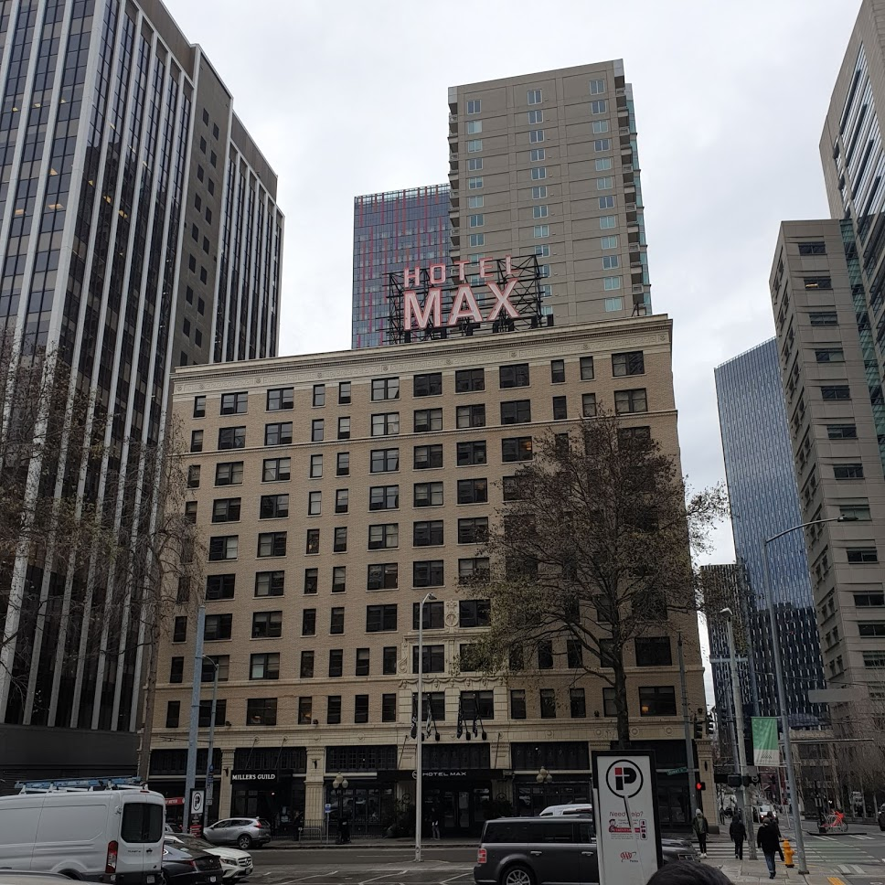
참으로 반가운 녀석...이 호텔에 머물기 위해 태어나서 처음으로 외국인과
전화통화도 해보고 메일도 주고받는 등 많은 노력이 있었다. 그 노력의
결실이 눈앞에 다가온 감격의 순간! 긴장의 해소와 더불어 몰려오는
피로감을 녹이기에 충분한 호텔이었다. 이제 남은 것은 첫 체크인. 영어의
나라 미국이지만 가나다라마바사와 아야어여오요우유로 입을 풀어준 뒤,
“Hello~ Can I check in here now~?”를 내뱉으며 여권을 들이밀었다. 이름
확인이 끝난 뒤 그들은 나에게 카드를 요구했다. 이 여행예산의 돌발변수
첫 번째가 나타난 것이다. 지금 들어도 무서운 그 이름 Deposit Fee.
당시엔 아무 생각 없이 카드를 내밀었지만, 누구도 뒤에 몰아칠 폭풍에
대해 알지 못했다. 하지만 그땐 호텔에 들어왔다는 안도감과 아무 생각
없이 첫 호텔을 즐길 생각에 들떠있기만 했다. 역시 무식하면 용감하다.
호텔 내부는 매우 깔끔하고 포근했으며 더할 나위 없이 좋았다. 겨울이었지만 땀에 젖은 옷을 갈아입고 개운하게 샤워를 하고 나니 이보다 더 좋을 수 없었다. 그리고 마음에서 잊힌 우리의 두 친구가 떠올랐다. 내 마음에 여유가 있어야 남도 챙기는 법. 그들은 어디에 있을까? 배고파하진 않을까? 친구들이 걱정되기도 하고 당장 우리의 배도 고팠기에 식량을 구하러 다시금 호텔을 떠나 미국의 수많은 boulevard, street와 avenue, road 위에 몸을 내던졌다. 우리가 찾아낸 곳은 바로 맥도날드! 서울에서도 청주에서도 폰 몇 번만 누르면 집 앞에 툭 하고 햄버거를 던져주는 맥도날드! 그것을 먹기 위해 비행기를 타고 기차를 타고 두 다리로 걸어 서울에서 8340km를 날아온 것이다. 다행히 숙소로 오던 길에 미리 그 위치를 파악해 두었기에 찾아가는 것은 어렵지 않았다. 하지만 그 앞에서 우린 미국의 암(暗)면을 목격하게 된다.
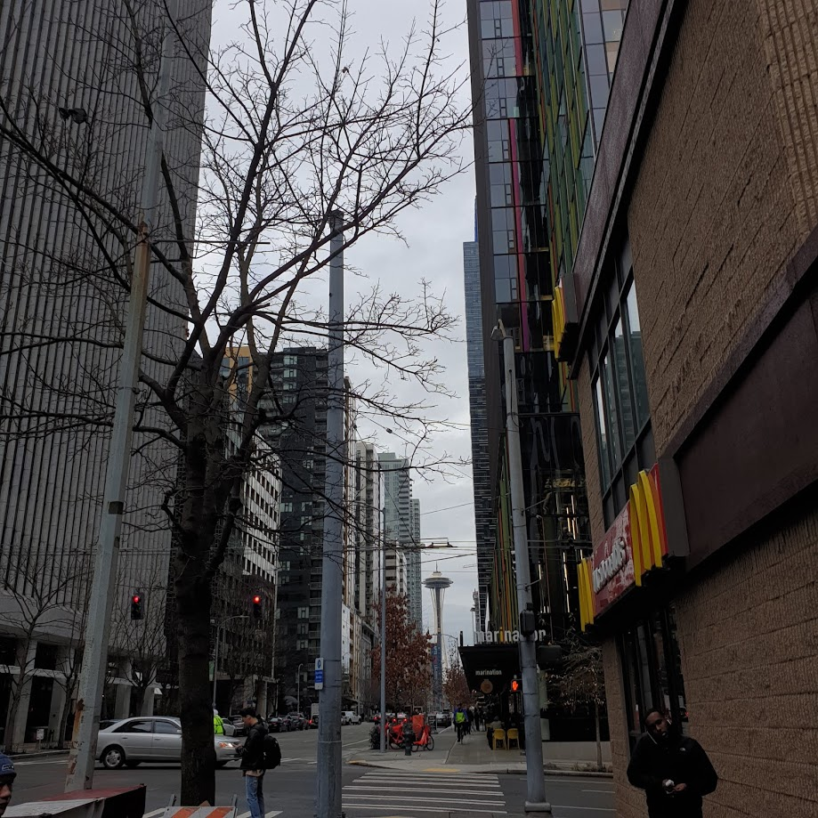
(오른쪽에 맥도날드와 멀리 시애틀의 랜드마크 스페이스 니들이 보인다.
허나 그 앞엔 ‘무언가’도 같이 있었다.)
미국의 길거리를 지나가다 보면 이런 생각이 참 많이 든다.
‘와 미x놈들 참~ 많다.’
길거리에서 지나가는 사람들에게 소리치는 사람, 혼자 같은 공간을 빙빙
맴도는 사람, 허공에 소리 지르는 사람, 그 와중에 꼭 똥 싼 바지 마냥
바지를 내려 입어 팬티 자랑을 하는 사람이 있는데 그들의 눈은
아랫도리의 하얀 팬티와는 다르게 시뻘겋다. 그리고 꼭 그런 사람 주변엔
뭔가 치약(?) 냄새와 비슷한 화한 향기가 코를 찌른다. 어딘가에 홀린
듯한 그 미x놈들이 미x짓을 할 수 있게 해주는 원동력은 바로 Drug,
마약이다. 나중에 미국에서 유학생활을 하고 있는 친구가 알려준 바에
의하면 그 냄새도 바로 대마초 냄새란다. 한국에서 마약은 가끔 뉴스에
나오긴 하나 일반 사람들이 길거리에서 접할 수 있는 정도의 대중성을
지니진 않는다. 허나 미국에서는 너무나도 흔한 약물이다. 많은
비행청소년, 노숙자들은 그들의 음지에서 마약을 한 뒤 길거리로 나온다.
인상 깊게 봤던 영화 ‘시카리오’나 드라마 ‘나르코스’를 떠올려 보면
멕시코, 콜롬비아 등지에서 생산된 마약의 최종 행선지는 모두
미국이었다. 영화에 등장하진 않았지만 내가 봤던 충혈된 눈의
소유자들은 작품의 숨은 제작자이자 연출가, 주인공들인 것이다. 앞서
언급했던 ‘클린트 이스트우드’의 눈빛을 기억하는가? 하지만 맥도날드
앞에서 우리가 본 눈들은 ‘조커’의 눈빛이었다. 미국의 3대 암면 중 첫
번째, 마약을 미국 도착 4시간 만에 눈으로도 보고, 코로도 맡으며 그
실상을 목도했다.
미국에서의 첫 식사를 미국하면 떠오르는 음식인 햄버거로 해결했다. 음... 차이가 있다면 감자튀김이 좀 짰다는 것? 아니 많이 짰다. 미국의 고열량, 고염분으로 무장한(한국도 만만치 않지만) 고(故)식단을 접한 것이다. 배는 고팠고 맛은 괜찮았기에 야무지게 한 입, 두 입 맛있게 먹었다. 그 후에 아직 도착하지 못한 2명의 친구를 위해 방에 햄버거를 남겨둔 채 그들을 마중 나갔다. 생각보다 쉽게 숙소 근처까지 온 듯 한 친구들. 작별인사를 나눈 지 하루도 채 안됐는데 미국에서 보니 정말 반가웠다. 드디어 4명이 뭉친 순간! 이번 여행의 첫 레전드 오브 레전드 영상이 완전체가 된 순간 탄생한다.

((우)4명이 숙소에 모인 모습이다. 비록 방은 어지럽혀 졌지만 그만큼 재미와 온정은 배가 되었다. 이제 시작이다! 이잇후~)
4명이 모인 뒤, 개인 정비를 마치고 드디어 첫 관광을 나섰다. 우리의 목적지는 스페이스 니들과 더불어 시애틀의 대표 관광지인 파이크 플레이스 마켓과 스타벅스 리저브 매장이었다. 허나 관광지 자체도 좋았지만, 첫날이라 그런지 그곳을 향해가는 동안 보는 시애틀 길거리, 카페, 공원, 사람들의 모습이 지금은 더 기억에 남는다. 월요일 저녁 퇴근 후 아이들과 함께 공터에서 노는 엄마들, 반려견과 함께 여유롭게 공원에서 공놀이하는 사람들, 농구장 가서 농구나 하라고 친구에게 소리치던 건장한 누님들. 시애틀에서 풍기는 진한 사람 냄새가 여유를 타고 나에게 날아왔다. 나는 집을 나와 일상의 때가 묻지 않은 곳으로 여행을 떠나야 이렇게 여유로워지는데 그 사람들은 본인의 일상 속에서도 여유를 찾고 행복하게 하루를 마무리하는 것 같아 부러웠다. 그와 동시에 내가 아직 학생임을 깨닫고 그 부러움은 아리게 다가왔다.
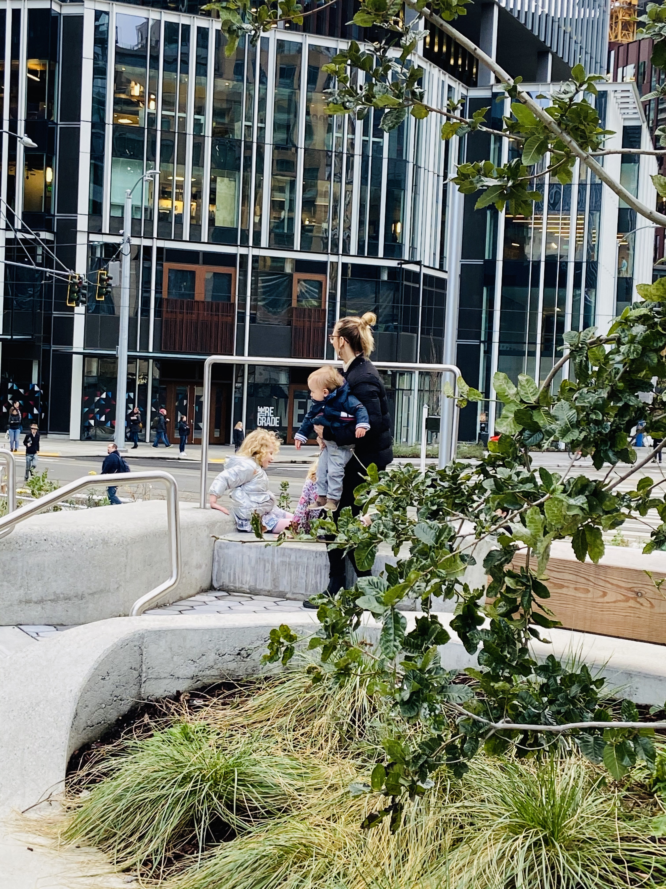
(요즘과 같은 저출산 시대 미소를 짓게 되는 사진이다. 참고로 미국의
출생률은 1.93명으로 굉장히 준수해 보이지만 인구 유지에 필요한 황금
수 ‘2.1명’에 모자란다고 벌써부터 인구 문제를 수면 밖으로 끌어내고
있다. 흠.. 우리는 0.8명인데..)
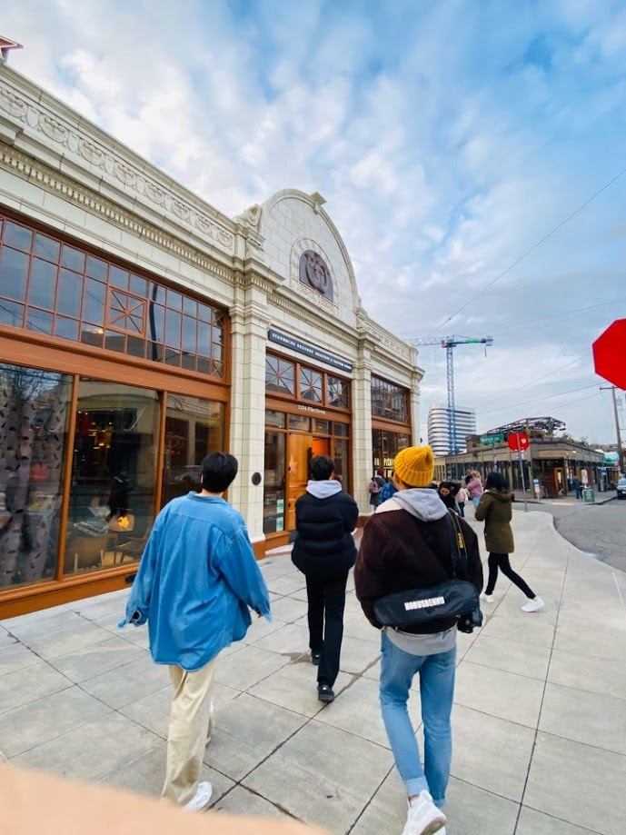
(역시 선두병은 과학. 스타벅스 리저브 매장 앞이다. 매장
안에선 커피를 만들어 내는 수많은 기구들을 볼 수 있고 직접 커피를
주문해 마실 수도 있다. 단 사람이 매우 많으니 한적함과는 거리가 멀다.
곁눈질로 본 것이지만 커피 외에도 칵테일(?)이 있었던 것 같기도 하다.)
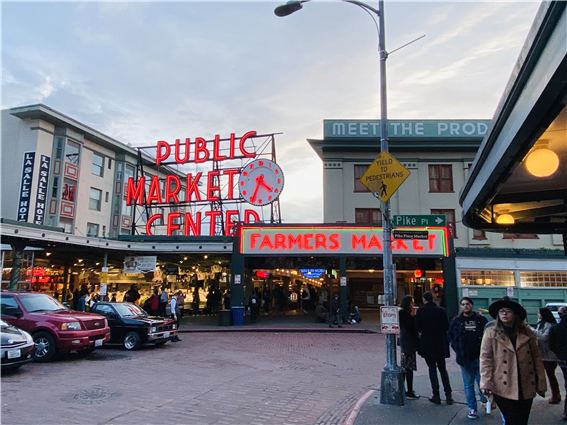
(퍼블릭 마켓의 입구 모습이다. 바다를 접하고 있는 도시 특성상 안에는
수많은 해산물이 즐비하고 기념품가게, 껌 벽 등 숨겨진 관광지도 자리
잡고 있다.)
시애틀은 대한민국에서 가장 가까운 미국 본토 도시이다. 비행기를 타고 인천에서 출발해 하와이나 알래스카를 제외하고 10시간 안으로 도달할 수 있는 유일한 미국 땅이다. 모두들 세계지도를 떠올려 보면 그 위치를 쉽게 추측할 수 있다.(비행기가 한국에서 미국까지 위도를 따라 일자로 쭉 날아간다고 생각하는 사람은 없겠지?) 미국의 서북부 끝, 캐나다 바로 밑에 태평양을 마주하고 있는 도시가 바로 시애틀이다. 그렇기에 풍부한 해산물이 시애틀의 자랑이다. 여행을 같이 갔던 애들은 매우 싫어하는 비유지만 이런 여행기를 읽는 사람들이 가장 잘 와 닿게 느낄 수 있는 것이 바로 현지화 비유라고 생각한다. 내가 생각하는 시애틀은 서울의 테헤란로와 속초의 동해바다가 공존하는 도시였다. 시애틀 사람들의 삶을 대강 유추해 보자. 매우 주관적인 나의 망상이니 가볍게 읽고 넘겼으면 좋겠다.
*“아래 이야기의 인물, 사건 등은 모두 허구이며, 실제와 관계없음을 알려드립니다.”
시애틀에 거주하는 한 남자 Haebochang Doo(이하 해피)는 시애틀 퀸 앤 지역의 고즈넉한 주택에서 살아간다. 그는 아침마다 집 앞에 있는 케리 파크 주변을 조깅하며 코로나19로 폐쇄된 헬스장 대신 산스장의 기운을 느낀다. 가끔 관광객이 공원에 찾아와 시끄럽게 사진을 찍어댈 땐 그가 자주 가는 조용한 카페에 가 커피 한잔 하곤 했지만 요새는 아무도 방문하는 사람이 없어 적적함에 목을 축인다. 해피에겐 두 명의 동생이 있는데 둘째 Mangrove Doo(이하 맹브)와 막내 Kylie Doo가 바로 그들이다. 첫째 해피는 현재 ‘아마존닷컴’에서 일하는 IT, 클라우드 컴퓨팅 전문가이다. 아마존의 주가가 날이 갈수록 하늘을 찌르게 되면서 더해진 업무들과 실적 경쟁으로 스트레스를 받곤 하지만 퇴근 후 퍼블릭 마켓에서 들이키는 맥주 한잔에 인생의 쓴맛을 날려 버리곤 한다. 그가 가장 좋아하는 메뉴는 'crab pot special'인데 대게와 홍합, 새우 그리고 수분감 넘치는 옥수수와 에일맥주이다. 하지만 일상에 지친 그에게 있어 그 무엇보다 중요한 말동무이자 최고의 안주는 그의 동생 맹브이다. 밀려오는 4차산업과 자본주의의 최전선에서 고통 받는 형과 달리 맹브는 시애틀 파이크 플레이스 마켓 앞 작은 골목에서 카페를 운영한다. 어릴 적부터 인생에 한가함과 여유가 가득했던 그는 하루의 시작을 커피 볶는 것으로 시작해 갈고 내리는 일로 하루를 마무리한다. 온종일 커피와 함께하는 그의 카페는 시애틀 내에서 탄탄한 평판을 확보해 작지만 강한 내력을 지녔다고 평가받는다. 언제나 힘들어하면서도 꾸역꾸역 일을 하는 형을 볼 때마다 ‘성실한 무기징역수’같다며 안타까워한다. 마지막으로 막냇동생 카일리는 한때 잘나가던 미국 셰일기업에 다니며 승승장구를 계속했지만 코로나19사태로 촉발된 중동의 석유 치킨게임으로 회사가 부도가 나 버렸다. 졸지에 실직자가 되어버린 그는 퀭한 눈, 부스스한 머리, 창백한 얼굴로 시애틀 길거리를 배회한다. 집세도 내지 못하는 상황에 처한 그는 하루하루를 시애틀 모노레일 밑과 파이오니어 스퀘어를 번갈아 다니며 잠을 청한다. 밤에 관광객들과 마주치면 애써 웃어주곤 하지만 이미 그의 눈은 공포에 떨고 있는 상대방을 보고 있다. 자신이 그렇게 무서운 존재였던가 애석해하며 얼른 시선을 거두게 되는 하루의 마지막이다.
얼핏 보면 무슨 얘기를 하는지 모르겠다. 중요한 두 상수를 넣어 주어야 한다. 시애틀과 미국. 우리가 시애틀 도심지에서 마주한 수많은 건물 중에서 기억에 남는 건물이 하나 있다. 바로 아마존 본사 건물이다.
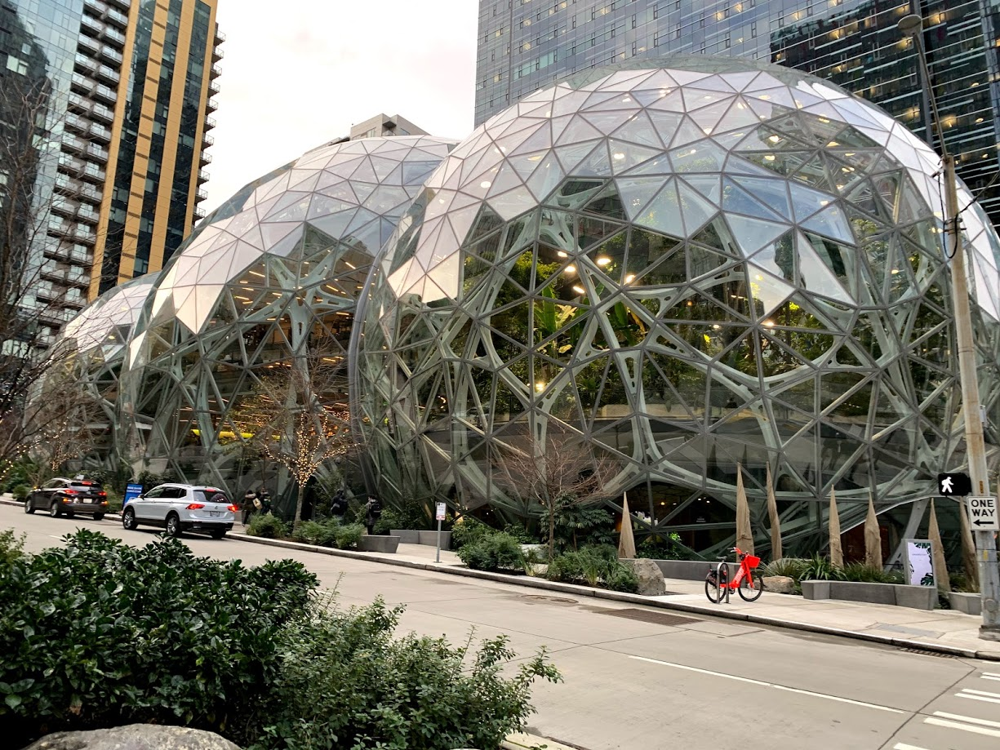‘도심 속 열대우림’ 이라는 주제로 지어진 혁신적, 창의적 업무공간 ‘더 스피어스(The spheres)의 모습인데 이곳이 바로 첫째 해피의 일터이다. 누구나 알다시피 아마존은 현재 미국을 이끌어가는 기업 중 하나이다. 애플, 마이크로소프트에 이어 나스닥(NASDAQ) 시가 총액 3위이다. 코로나 19사태에 전 세계 경제가 무너지는 와중에도 FAANG(Facebook, Apple, Amazon, Netflix, Google을 통칭해 이르는 말) 기업의 일원으로 주가 상승을 이뤄냈다. 포스트 코로나 시대 수면 위로 떠오른 ’언택트‘가 주요 사업인 탓에 그 미래도 참 밝아 보인다. 그런 창창한 기업의 본사가 실리콘밸리가 아닌 바로 시애틀에 있는 것이다. 무궁무진한 잠재력을 지닌 수많은 인적 자원, 그들이 창출해 낸 생산물이 바로 저 건물에서 세계로 뻗어 나간다. 뻗어 나간 생산물은 트렌드를 구축하고 사람들을 이끌어 간다. 트렌드에 이끌린 사람들이 모인 곳에는 힘이 생긴다. 세상을 굴리는 힘. 그 힘을 만들어 낸 사람들은 저 Bezos`s Balls 안에서 또 다른 트렌드를 만드는 일에 열중한다. 이 끊임없이 반복되는 쳇바퀴에 시애틀도 맞물려 있다. 100% 아마존 때문이라고 볼 수는 없지만 아마존 본사의 이전 후 시애틀 인구는 5년 사이 30% 정도 급증했고 우리도 보았듯이 공사 중인 건물의 수가 꽤 많았던 것처럼 건물의 수도 많이 늘었다. 실리콘밸리 다음가는 IT 허브 도시로 시애틀 역시 그 힘의 위력을 받아내면서 동시에 뿜어내고 있다. 필자는 다다음날 아침을 먹으러 가는 길에서 도시의 활력을 느낄 수 있었다. 관광객의 입장으로 한 걸음 떨어져 보았던 시애틀의 아침은 촉촉이 낭만을 적시는 부슬비 속에서도 분주했고, 분주함 속에서도 여유를 잃지 않은 사람들의 생기가 가득했다. 어쩌면 누군가에겐 고통스러웠을 출근길 미화가 너무 심한 것 같지만 한 손엔 맥 모닝, 한 손엔 오렌지 주스를 들고 천천히 숙소로 돌아오는 길에선 확실히 그런 생각을 했다.
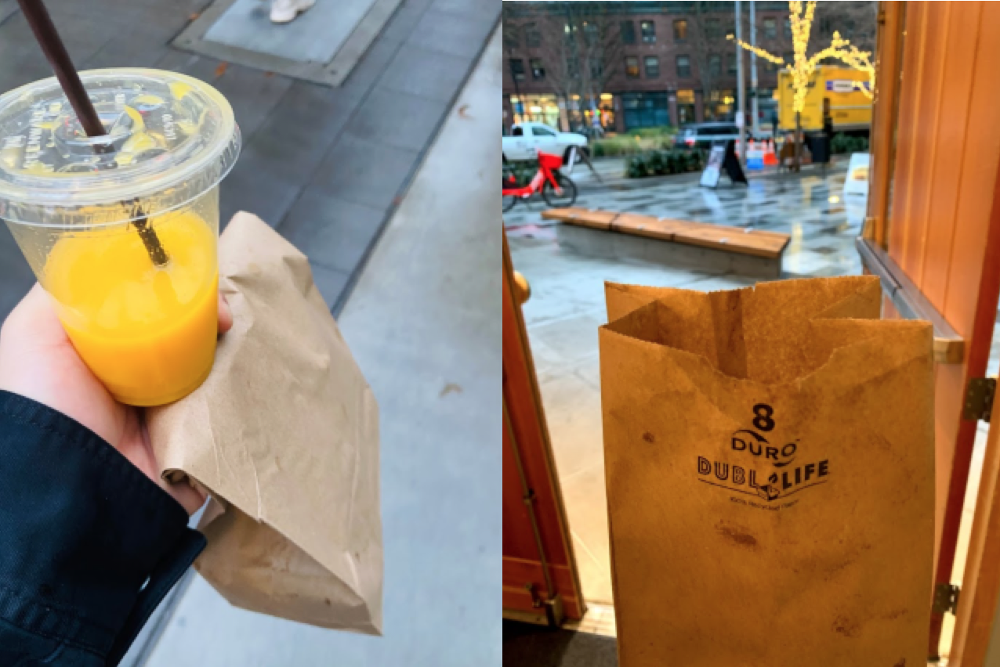
(아침으로 먹은 맥 모닝과 주스. 포장하러 가는 길도, 포장을 해주시는
여사님도, 포장을 받고 나오는 길도 너무나도 좋았다. 난 저 갈색 봉지가
이상하게 좋더라... 다음에 시애틀을 또 가게 된다면 꼭 다시 방문할
것이다. 위치도 아마존 건물 바로 옆이라 사람구경, 건물 구경하기 참
좋다. 내가 봤던 사람들 중 출근하는 해피도 있었겠지.
아 재택근무구나)
*참고로 우리가 직접 가보진 못했지만, 위에서 언급했던 기업 중 하나인
마이크로소프트도 시애틀에 위치한다. 아마존으로 모자라 마소까지 가진
무서운 도시다...
지금까진 첫째 해피를 통해 시애틀의 힘을 보았다면 이번엔 둘째 맹브를 통해 시애틀의 감성을 볼 차례이다. 누구나 이름만 들으면 알 법한 카페가 하나 있다. 지금 대한민국에서도 너무나 흔하게 볼 수 있는 그 카페. 바로 스타벅스이다. 시애틀에 가기 전 관광명소를 검색할 때마다 너무나도 자주 보이던 이름 ‘스타벅스’. 그 카페는 시애틀에서 작은 소매점으로 시작해 세계적인 거대 프렌차이즈 카페가 되었다. 그 역사의 시작인 스타벅스 1호점이 아직도 이곳 시애틀에 위치하고 있다. 스타벅스의 출발이 된 도시인 만큼 시애틀에는 스타벅스가 정말 많다. 한 블록 지날 때마다, 한 코너를 돌 때마다 쉽게 스타벅스를 찾을 수 있다. 그중 가장 유명하고 인기 있는(관광객 한정) 지점은 당연 1호점이다.
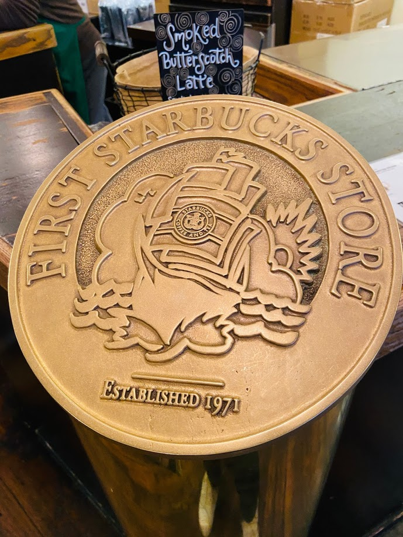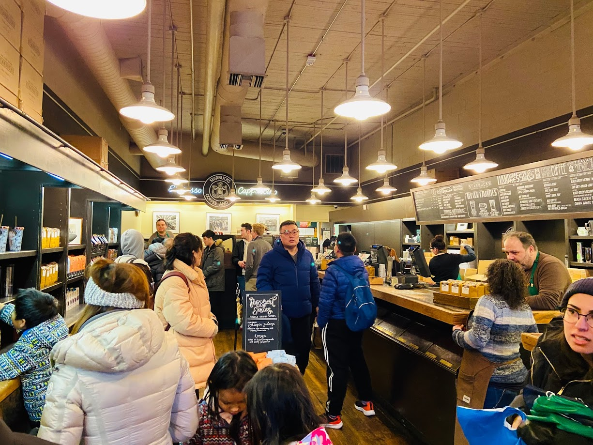
시애틀엔 이런 스타벅스와 같은 대형 프렌차이즈 말고도 소규모 카페들이 참 많다. 커피의 도시라고 불리는 도시답다. 시애틀이 커피의 도시가 된 이유는 여러 가지가 있는데 앞서 말한 스타벅스와 같은 대형 커피 프렌차이즈의 탄생 말고도 시애틀의 기후, 문맹률 등과 관련 있다고 한다. 우리도 느꼈지만, 시애틀의 겨울은 참 애매하다. 그리 추운 것 같지도 따듯한 것 같지도 않은 그 사이 어중간한 기온. 외투를 벗으면 춥고 입으면 덥다. 덤으로 부슬부슬 내리는 비가 동반된다. 참 따듯한 커피 한 잔 손에 쥐고 싶은 날씨이다. 또한, 시애틀은 미국 전체 도시 중 문맹률이 가장 낮으며, 도시 인구의 54% 이상이 대학 졸업자라고 한다. 으슬으슬한 날씨 속에서 카페를 찾아 따듯한 커피 한 잔 마시며 얘기를 나누고 책을 읽는 사람이 많은 것이다. 이러한 이유들로 시애틀이 속한 워싱턴 주의 커피 소비량은 캘리포니아 다음으로 2위이다. 맹브의 사업이 번창할 수밖에 없다.
우리가 갔던 파이크 플레이스 마켓엔 커피뿐만 아니라 여러 해산물들이 많다. 그중 우린 crab pot이라는 가게를 방문했는데 큰 대접에 가득 해산물과 옥수수를 담고 식탁에 부어서 준다. 그럼 우린 망치를 통해 대게, 새우, 홍합 등의 껍질을 부수고 속살을 발라 맛있게 먹으면 된다.
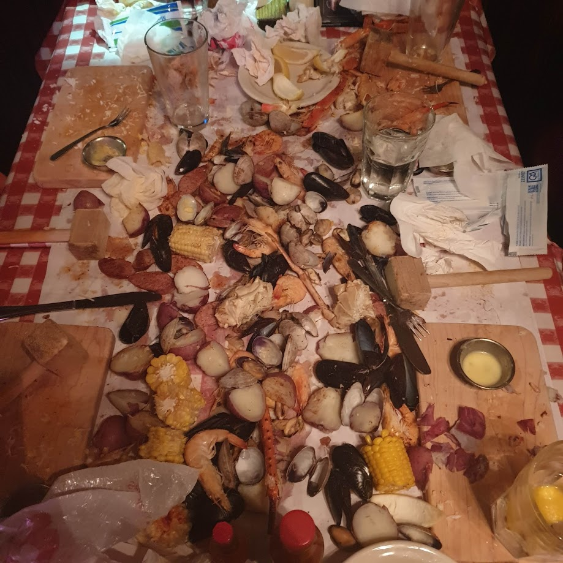
(해산물도 맛있었지만, 솔직히 까서 먹는 건 힘들었다. 수분감 넘치는
옥수수는 기대 이상.)
이외에도 수많은 가게들이 시장 안에 즐비하다. 시장을 걸으며 그 안의 사람들을 보는 것 또한 참 재미있다. 고기를 던지면서 주고받는 상인들, 진열대의 싱싱한 채소와 과일 사라며 지나가는 관광객 붙잡는 아저씨, 한 입 시식해 보라며 대게 발라주는 상인까지 시장 그 자체가 볼거리고 즐길 거리였다. 오전엔 위의 해피처럼 열심히 세상을 바꾸고 굴리는 일을 하고 오후엔 맹브의 감성으로 해안가 시장에 와 해산물에 맥주 한잔 하는 일상이 관광을 끝내고 돌아가는 걸음걸이마다 떠올랐다. 단숨에 시애틀은 나에게 살고 싶은 도시 1순위에 올라버린 것이다. 테헤란로에서 속초까지, 다시 속초에서 테헤란로까지 걸어가 가는 데 걸리는 시간은 고작 왕복 30분. 일상의 치열함과 여행의 낭만이 공존하는 도시의 모습이 내가 바라본 시애틀의 모습이었다.
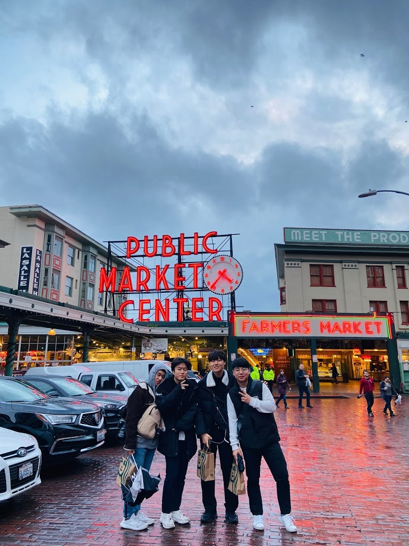
(마켓 앞에서의 단체 사진. 혀를 굴리며 “Excuse me~ Could you take our
picture?”라고 물었으나 “한국인이세요?”라고 대답이 돌아온 건 비밀...
마음속에 시애틀의 감성을 가득 담아 돌아가는 길 위, 어김없이 부슬비가
나의 마음을 적셔 주었다.)
첫날 관광을 마치고 돌아가는 길. 다음 날 아침을 사기 위해 Pharmacy에 들렀다. 미국에 가서야 알게 되었는데 Pharmacy 하면 다 약국인 줄 알았는데 편의점의 역할도 동시에 한다. 예산안에 알맞게 요거트와 빵을 구입하고 있었는데 아까 위에서 언급했던 ‘그’ 패션의 소유자들이 가게 안을 서성이고 있었다. 그들을 본 지 1분도 안 되어 보안요원들이 출동해 그들을 내쫓았고 우리는 가게를 나서는 길에 그들과 사람 한 명 들어갈 만한 텐트를 보았다. 거리가 어두워지고 골목이 으슥해지면 나타나는 그들. 카일리의 현재이자 미국의 3대 암면 중 두 번째인 노숙자들이다.
미국의 밤거리에서 정말 흔하게 볼 수 있는 사람들이 바로 노숙자들이다.
대부분 흑인들이며 약을 했는지 눈동자는 시뻘겋다. 낮에도 골목길을
지나다니다 보면 그들의 흔적을 볼 수 있다.
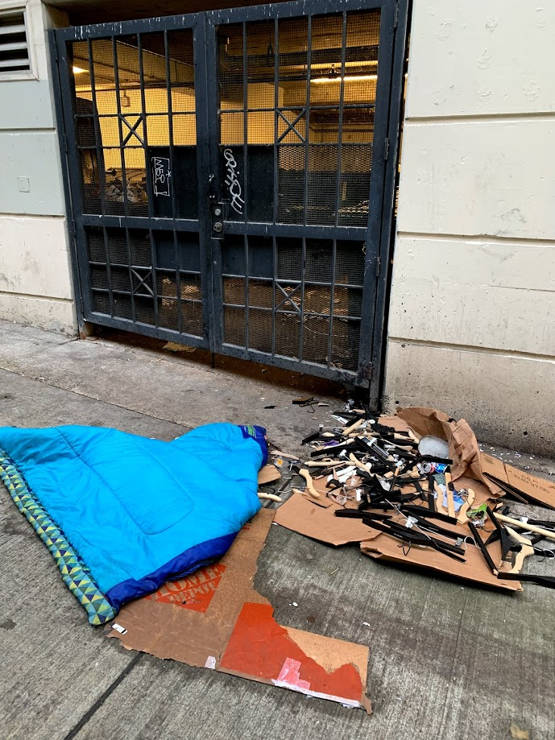
흔히 미국에 가서는 밤에 돌아다니지 말라고 한다. 사실 한국에서는 밤에
돌아다녀도 괜찮다가 더 의미 있는 말인 것 같다. 미국 말고도 다른
외국에서 보통 깊은 밤, 새벽에 돌아다니는 것은 매우 위험한 행위이기
때문이다. 시애틀의 겨울은 금방 해가 지기 때문에 17시만 넘어가도 벌써
길이 어두워지기 시작한다. 숙소로 돌아가기엔 너무 이른 시간이기에 더
구경하면서 놀고 싶다가도 거리에 등장하시는 노숙자를 볼 때마다 그런
생각이 쑤욱 들어간다. 그들은 어쩌다 꿈도 희망도 잃은 채 길거리에
나앉게 되었을까?
현재 대한민국에서 가장 시끄러운 뉴스는 부동산 관련 뉴스이다. 정책이
발표될 때마다 하늘 높은 줄 모르고 치솟는 집값이 많은 사람들에게
희망을 앗아가고 평생 내 집 마련 한번 못하게 된다는 공포감을 조성하고
있다. 지금 서울 아파트 평균 매매가는 9억 원을 돌파했고 전, 월세
가격도 덩달아 상승하는 중이다. 미국도 이와 상황이 별반 다르지 않다.
미국 부동산 가격 사이트(https://www.judimoonrealty.com/)에 들어가 가격을 확인해 보면 정말 다리가 다 저려온다. 특히 뉴욕,
샌프란시스코의 경우는 말할 것도 없고 이곳 시애틀만 하더라도 집값이
정말 높다. 또한, 매매가뿐만 아니라 월세도 엄청난데, 샌프란시스코의
경우 월 380만 원, 뉴욕의 경우 월 240만 원이 평균 월세라고 한다.
월세가 이렇게 오르게 된 것은 모두가 잘 알고 있는 미국의 대표
경제위기 ‘서브프라임 모기지 사태’가 그 원인으로 꼽히는데, 많은
사람들이 주택 담보 대출을 받았으나 빚을 갚을 여건이 안 돼 주택을
압류당하고 월세를 구하게 되면서 수요가 늘자 가격이 올랐다는 것이다.
경제위기 후 치솟은 가격 그와 더불어 실직한 사람들. 그러니 이 엄청난
월세를 감당할 수 있는 사람이 많지 않은 것이 당연하다. 주택을
소유하지도, 월세를 낼 여력도 없는 사람들은 차에서 생활하거나
차마저도 없으면 길거리에 나앉게 되었다. 또한, 어떻게든 월세를 내며
집에서 생활하던 사람도 자신의 수입에 약 50% 이상을 월세로 소비하면서
저축을 하기 힘들어졌고 그에 따라 자그마한 위기에도 매우 취약해졌다.
이런 상황에서 큰 수술을 하게 되거나 사고로 차를 잃는 악재가 겹치면
바로 월세를 내지 못하고 노숙자가 되는 것이다. 이외에도 집값에 비해
턱없이 낮은 최저임금, 정신 질환, 가정 폭력과 같은 문제로 인해 선진국
미국엔 노숙자의 수가 많아졌다. 미국이란 나라를 볼 때마다 세계를
선도하는 기업들, 유행을 이끌어가는 문화, 예술 컨텐츠들, 눈을
사로잡는 자연환경이 부러우면서도 그 뒤에는 냉혹한 자본주의 현실이
기다리고 있다는 점에서 등골이 오싹하기도 하다. 누구는 카지노에서
수천만 달러를 밥 먹듯이 탕진하고 있는데 이와 한 블럭 떨어진 곳에선
기초적인 의료, 복지 혜택조차 누리지 못하는 사람이 존재함을 미국이란
나라는 아주 노골적으로 보여준다. 기회를 잡고 능력을 인정받으면
한없이 잘나갈 수 있지만 동시에 기회를 놓친 사람들, 기회조차 주어지지
않은 사람들에 대한 돌아봄이 미국엔 필요하다. 자본주의가 현재까지
인류가 찾아낸 가장 실질적인 경제체제인 점은 확실하다. 크고 작은
문제들이 드러나긴 했지만 우린 시장과 정부라는 두 요인을 조율하고
통제하며 더욱 이 시스템을 발전시켜 왔다. 앞으로도 수많은 난관이
인류의 경제체제를 위협할 것이다. 그때마다 우린 위기를 헤쳐감과
동시에 이 미국의 길에 남겨진 사람들, 시스템의 외부로 나가떨어진
사람들을 생각해야 한다. 물론 그 방향이 성장, 발전의 유인을 없애는
쪽이면 안 되지만 그들이 정상적인 삶을 영위할 수 있도록 돕고 지원해야
하는 것은 자명하다. 사실 이 성장과 복지라는 두 마리 토끼를 동시에
잡는다는 것은 너무나 이상적인 소리이다. 하지만 한숨으로 가득 찬
비관에 빠져 우리의 지향점이 어디인가 논하는 과정을 빼버린다면,
그것은 수많은 법, 정치, 경제, 사회, 문화 체제를 이루고 살아가는
인간이 그간의 역사를 스스로 부정하는 일이며 호모 사피엔스가 다른
동물들보다 더 많은 영토와 자원을 누리고 살아가는 이유를 잃어버리는
일이다.
우리는 우리 세상의 암면을 미국의 어둠을 통해 확인했다. 거리의
‘조커’들은 이 나라가 어떤 곳인지 각인시켜 주었고 인류의 성찰이
필요한 지점임을 상기시켰다. 동시에 공항에서 마주했던 미국의 ‘힘’의
근원을 시애틀의 거리에서, 건물에서, 사람들에게서 조금은 맛보았다.
이제 하루 지났는데, 참 많은 것을 보고 느꼈다. 여행이란 것이 이렇다.
평소에 가졌던 생각과 감정들이 새로운 풍경과 사람들, 문화와 어우러져
마구 튀어나온다. 그래서 꼭! 시간과 돈을 들여 떠나야 한다. 그
무엇보다 값지고 소중한 배움과 경험의 장이 될 터이니 말이다.